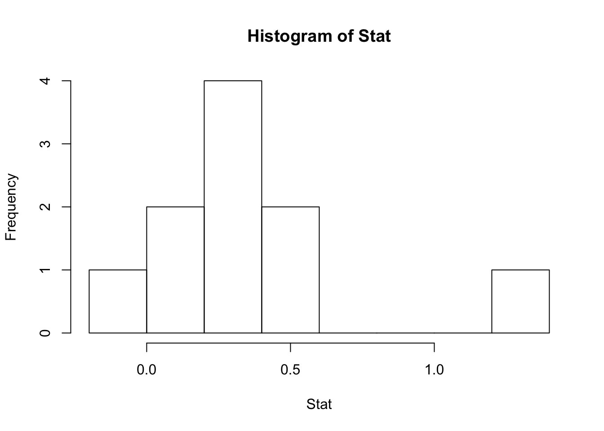
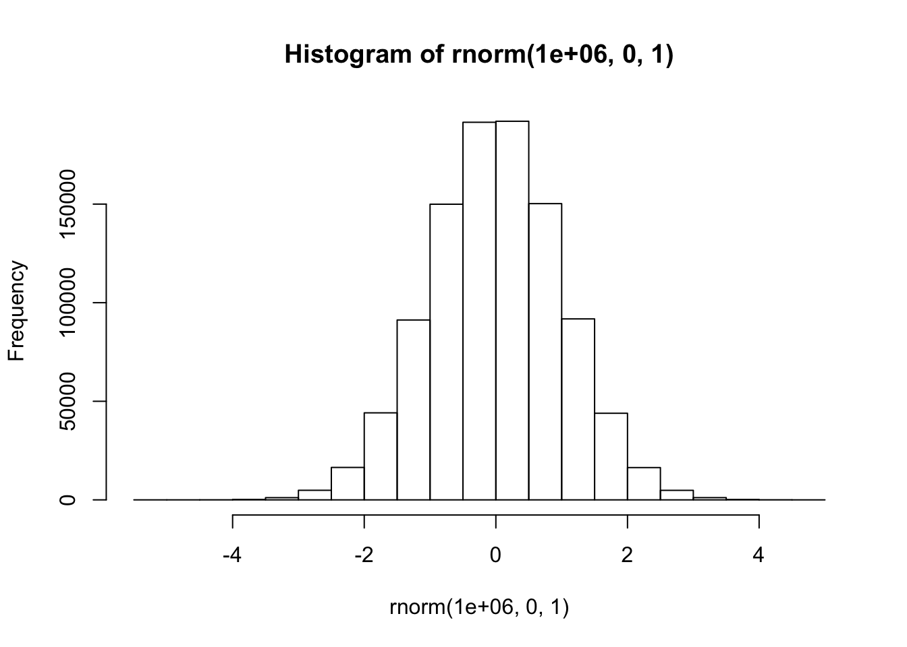
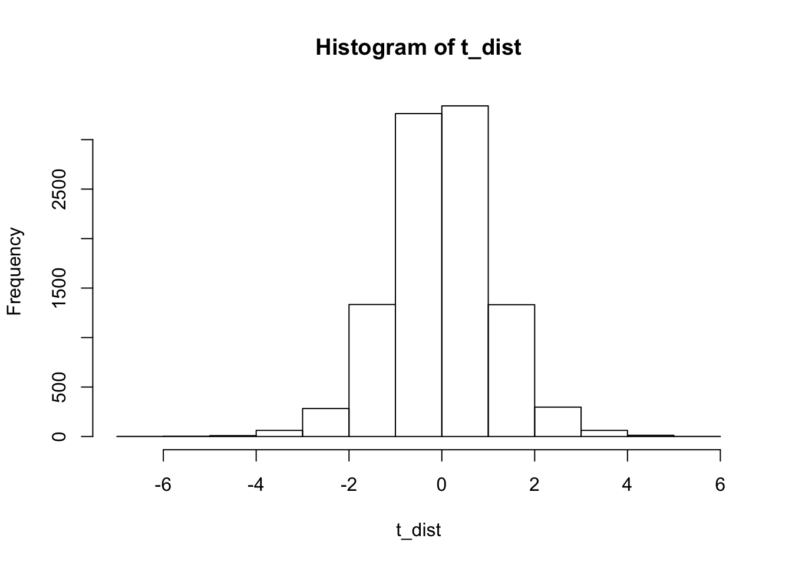
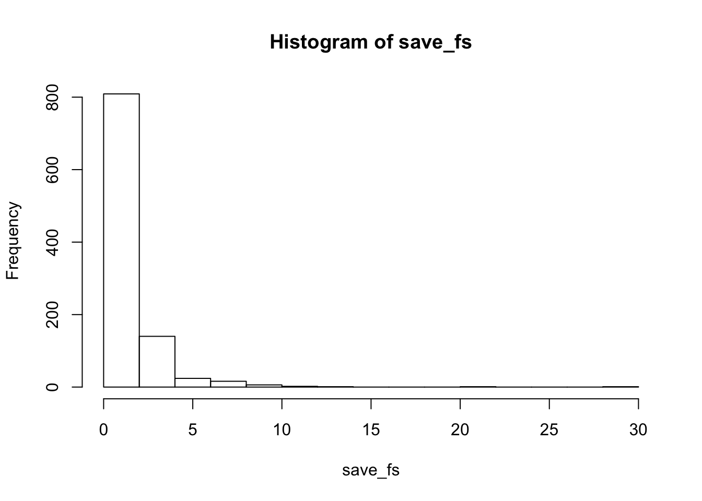

Stat<-rnorm(10,0,1)
hist(Stat)
# More normal
hist(rnorm(1000000,0,1))
#Replicate
replicate(100,rnorm(10,0,1))## [,1] [,2] [,3] [,4] [,5]
## [1,] -0.04746663 -1.3272957 0.14203882 -0.08799846 0.3410729
## [2,] 2.06453190 -0.7255195 -0.70982764 0.88584172 -0.4300872
## [3,] -0.05238429 1.0365414 -1.21494658 -0.87967904 -1.0876073
## [4,] 0.63114814 -0.7737919 0.12039022 0.14115987 1.2210577
## [5,] 0.16684435 1.5065885 0.43550686 0.06611688 0.7410627
## [6,] -0.45625410 2.8498998 0.24846079 -1.56760375 1.1554280
## [7,] 0.92711009 0.1794879 0.23395801 0.32626960 -0.5147337
## [8,] -0.32572192 -0.7056170 1.05408315 -0.35161618 0.9447087
## [9,] -0.47250459 0.7344977 -0.06267823 -0.19612602 -1.0068408
## [10,] -1.24452066 0.6101639 1.28246993 -0.14357591 0.3890669
## [,6] [,7] [,8] [,9] [,10]
## [1,] -1.86429867 -1.5790930 -0.101250510 -0.6866287 -1.57080596
## [2,] 0.71412586 0.4801916 -1.427353794 0.3291891 0.14764279
## [3,] 0.63269008 1.1009380 0.538042122 -0.3577326 -0.24116406
## [4,] 0.12751502 -1.5903565 2.341158210 -0.8599069 -0.89259912
## [5,] -0.03659345 1.1295552 -0.371104578 -0.7563102 0.84733096
## [6,] 0.33882067 -0.1516850 1.812319648 -0.9768231 -1.30424410
## [7,] 1.88000724 0.2304572 -0.226963939 3.0615140 0.26408603
## [8,] 1.09314183 1.9520747 1.430507116 0.7252179 0.76583342
## [9,] 0.04643487 0.5291183 -0.005791836 0.3963008 0.75920150
## [10,] -0.07884316 0.5126320 0.485925191 -1.3833500 -0.09472715
## [,11] [,12] [,13] [,14] [,15]
## [1,] 0.61771147 0.3352107 -1.348847168 0.840859867 -0.85227058
## [2,] -1.00882882 1.0413889 0.134370907 1.095785123 -1.11283297
## [3,] 0.02942503 0.5798118 -1.050629923 1.807086912 0.32499688
## [4,] 0.78442571 -1.1391420 -1.645923135 0.743934633 -0.30605952
## [5,] -0.79775467 -1.0134037 -0.887034271 0.482345546 -0.53809250
## [6,] -0.12567919 -1.5501772 1.700696511 0.009747643 -0.65249911
## [7,] -1.22878603 0.2950836 1.074186182 -1.097585615 0.03386594
## [8,] 0.18244148 -0.7498851 0.165903459 -0.967684833 -2.13081152
## [9,] -1.41293304 -0.1922240 -0.737871764 -1.141959915 0.79958954
## [10,] 1.50478665 0.7125559 -0.003480368 0.764532265 1.20948987
## [,16] [,17] [,18] [,19] [,20]
## [1,] -0.83244187 -1.0002809 1.354619226 -1.35221212 1.2169894
## [2,] 0.15376695 1.3001358 0.227885203 0.40246637 0.9398646
## [3,] 1.33245406 0.6214533 0.252184897 0.23794380 -0.3374619
## [4,] 0.20026975 -1.6035392 1.482214303 -1.51816051 -0.5850056
## [5,] -1.84322746 0.7434557 0.536499516 0.94915653 1.6286181
## [6,] -0.08728017 0.4302888 0.557764066 -0.69669012 0.2250291
## [7,] -1.06679049 0.5170613 -0.259028645 0.82396495 0.1605974
## [8,] -0.12095763 -0.7396036 0.002606723 -0.03106787 -0.3998347
## [9,] -0.16018471 -2.1812930 -0.928896018 1.37591645 -0.6392847
## [10,] 0.25529883 1.0360205 -0.047867292 -1.56732401 -0.5485794
## [,21] [,22] [,23] [,24] [,25]
## [1,] -0.13840166 1.64519119 -0.2994944783 -0.63339037 -2.06511695
## [2,] -0.33245500 -0.47632275 1.0231460073 0.01379008 -0.08209055
## [3,] 0.09408816 0.44337044 -0.4686832335 -0.97222870 -0.13342386
## [4,] -1.32487537 -0.05236607 -0.9998772013 -0.72168946 0.43893847
## [5,] -1.11805147 -0.98014141 0.2044069925 -0.10896500 1.87424219
## [6,] -1.18428814 1.18018722 -0.0001065626 -0.42000436 1.31097055
## [7,] -1.35211474 0.45921045 -0.8807761179 -1.59446615 1.91047325
## [8,] -0.59993271 0.13001450 1.2744883206 0.82850478 -0.27495222
## [9,] 0.71882443 -0.87014824 2.0351390759 -1.20358294 -0.43171850
## [10,] -2.95028111 0.50784538 -1.4587263960 -0.54551157 0.90105458
## [,26] [,27] [,28] [,29] [,30]
## [1,] -1.26181064 -0.9692547 1.45383037 0.40113295 -0.16468053
## [2,] 0.37962024 -1.1073118 1.45042744 2.39209597 0.09298316
## [3,] 0.59959239 -1.1815467 1.36887352 1.66976882 -1.13815755
## [4,] 0.04188697 1.8863265 1.32787724 0.22749921 -0.15932134
## [5,] -0.97246872 0.2080634 0.14847291 1.37413452 -0.18300401
## [6,] 1.35983966 1.1723092 0.05666518 0.29976384 0.11022473
## [7,] 0.56564222 -0.8218091 -0.21953560 -1.85620636 -0.95969859
## [8,] 0.52388417 -1.1599628 -0.34897982 1.63932216 -0.24229490
## [9,] 0.83330664 0.4066924 0.64629326 -0.04186088 1.80216212
## [10,] -0.04755696 -0.3545173 -1.20840302 0.10048053 0.15986446
## [,31] [,32] [,33] [,34] [,35]
## [1,] 0.6634012 0.323613250 0.44508580 1.13214745 -1.6586645
## [2,] -1.3010667 0.425840357 1.48245163 -0.05754429 0.6275566
## [3,] 0.1342432 -2.957939182 -0.72256307 0.60047054 -1.0820164
## [4,] -0.9601087 0.257992906 0.24498418 -0.11577521 0.9764681
## [5,] 0.5485884 0.009382207 -1.20608315 -0.02592827 -0.6000134
## [6,] -0.8169002 -1.090438870 -0.02991936 -0.63256872 -1.2646482
## [7,] -1.5615167 0.001938867 -0.67394316 0.55832858 -0.1485515
## [8,] -0.8506152 1.084326874 -0.13457117 -1.23754093 0.1623258
## [9,] -0.2046415 -1.865244451 1.35915351 -0.77203694 -1.3869468
## [10,] -1.2573454 -0.565498442 -1.30647145 1.11667091 -0.2317312
## [,36] [,37] [,38] [,39] [,40] [,41]
## [1,] 0.25120937 0.51007208 -0.1445176 0.7910952 0.7083619 -0.29585456
## [2,] -1.94041977 -2.26745936 -0.7780087 0.2980767 0.8973164 -0.25522686
## [3,] -1.49570256 -1.01983641 1.9119728 -0.1749122 0.9877622 0.84635671
## [4,] 0.01923206 -0.09925441 0.6219217 -1.0115354 -1.1645525 0.65467951
## [5,] -0.32850266 0.93649622 0.6035870 -0.5984019 -2.2379395 -0.39374634
## [6,] 1.38649413 -0.32283401 0.2487439 -1.1189693 0.7790129 -1.09934651
## [7,] 0.88825776 1.85772887 0.3327071 0.1012783 1.9501207 -0.33095167
## [8,] -0.37534185 -1.07444442 -2.1356366 0.1489885 -0.6709981 -0.87847225
## [9,] 0.26738439 -0.21680354 1.7636242 0.1084565 -0.0613872 -0.87364884
## [10,] -0.46739733 1.27805905 -0.3236193 0.6432495 -0.7456169 0.04913268
## [,42] [,43] [,44] [,45] [,46]
## [1,] -1.2806044 0.009495239 -1.0778092 -1.625077e-01 1.21972021
## [2,] -1.4211071 0.245153692 -0.4978290 -4.145043e-01 1.81610408
## [3,] 0.3822712 1.070171767 1.5694833 5.085084e-01 1.88531402
## [4,] 1.9104416 -0.804643788 -0.5234456 1.958089e+00 -1.72408110
## [5,] 0.3003988 1.049063097 0.2747787 -1.195658e+00 1.62873372
## [6,] -0.2599530 0.588938077 0.3707736 1.378664e+00 1.00447515
## [7,] 0.3094306 -0.950133568 -0.1786948 7.674835e-01 1.18817745
## [8,] 0.4191109 -0.721823794 0.7544575 -2.950885e-01 -0.02089403
## [9,] -0.7895175 0.549155558 -2.2646394 -1.297587e-05 -1.23015589
## [10,] -0.9198711 2.336950415 -1.4023968 -1.346487e+00 1.20617130
## [,47] [,48] [,49] [,50] [,51] [,52]
## [1,] 1.00707531 0.53650125 -0.8805283 0.12902954 0.5800838 -0.9420694
## [2,] 1.25220901 -0.43533862 0.9349417 -0.04848173 -0.5532813 -0.5340189
## [3,] 0.09045107 0.81990482 -0.5263302 -0.01219381 -1.5865957 1.2571310
## [4,] 1.30826262 -0.57539846 -1.4917481 -1.48367582 -1.2856435 0.7899475
## [5,] -0.58410210 0.01372691 0.7484430 -0.42079562 0.9435782 0.2694104
## [6,] -0.76691808 -0.38675126 1.0072191 0.24167120 -0.7250028 0.1787582
## [7,] -0.09673014 0.38017454 -1.5017299 1.10610180 -0.5898072 1.5208026
## [8,] -0.39121584 2.48534683 -2.4644491 -0.57776374 0.1339795 1.0445630
## [9,] -0.82796161 -0.85643180 0.6076643 1.69030337 -1.7384839 0.9140445
## [10,] -1.25397906 0.72178794 0.2586578 0.83188183 1.1760132 -0.6213706
## [,53] [,54] [,55] [,56] [,57]
## [1,] -0.095653877 -0.7066681 0.06176129 0.31862429 -0.10019493
## [2,] 2.141572463 0.9435565 -0.36814143 -1.88763867 -0.17052840
## [3,] -0.881067542 0.7168746 0.61381771 0.02222539 -0.04421640
## [4,] -1.021135109 0.7444685 1.36378005 0.12373409 0.86140340
## [5,] 0.462226586 -1.4276793 -0.45287142 1.76096983 2.32398324
## [6,] 1.587050011 -0.7894297 -0.64822590 0.52523341 -0.29686718
## [7,] 1.173997175 -0.6538178 0.07375151 1.05213053 0.07512734
## [8,] -1.044894709 0.4980217 0.23487362 0.70565620 -0.89262536
## [9,] 0.290176579 0.9406048 -2.36729384 -0.72356222 -1.70286834
## [10,] 0.005408026 -0.1990953 1.50411031 -0.06093698 -0.62515849
## [,58] [,59] [,60] [,61] [,62]
## [1,] -1.26033117 0.07490978 -0.9472914405 -0.39714111 -0.22544260
## [2,] -1.27411557 0.88109513 1.7473307048 -0.70976325 -0.46507191
## [3,] -0.60559469 0.56690627 -0.6452046041 -0.63456037 2.24613857
## [4,] 0.92028288 -0.06084015 -0.2891356264 1.07815799 -0.74714023
## [5,] 0.04801532 -0.03793867 0.8685614326 0.62102064 -1.05331896
## [6,] 0.28893918 0.28458226 0.0007509558 -0.13438517 3.05608858
## [7,] -0.95126470 -1.25262188 -0.1383344921 0.37259306 -0.36815818
## [8,] -0.54166689 -0.12568501 0.6259191602 -0.03690647 -0.50223325
## [9,] -1.26577988 0.50743784 -0.0182515957 -0.78476575 -0.08424097
## [10,] -0.14921077 -0.19793254 -1.5772206786 0.83706105 1.31240249
## [,63] [,64] [,65] [,66] [,67]
## [1,] -1.78473369 0.1993282 -1.2008313 -0.180041150 1.35801005
## [2,] 1.79314701 -1.0377105 -0.6023559 1.612946640 -1.01676966
## [3,] -1.63994679 -0.6512412 0.5917323 -1.491867858 -0.98693289
## [4,] -0.43982536 1.8276214 1.9591224 0.269952656 -0.87291586
## [5,] -1.00582185 1.0817306 -0.5242723 0.660397630 0.09699445
## [6,] -0.12891447 0.1591286 0.2952061 0.336680542 0.24409394
## [7,] 0.17560879 0.9026959 -0.2355042 -0.009329722 0.27364956
## [8,] -0.94586922 -0.1914077 -1.3345560 -0.283292716 1.22310483
## [9,] 1.84658344 1.3663480 -0.9910166 0.246552175 1.49435163
## [10,] -0.03500551 -0.9124112 0.9782395 -1.197220641 -1.61619816
## [,68] [,69] [,70] [,71] [,72]
## [1,] 0.3946825 -2.5188155 -0.48018010 0.92021015 -2.29277725
## [2,] -1.0884724 -0.8690466 -1.10831038 -0.08964921 0.17623850
## [3,] -0.5008619 1.1319438 -1.63667489 0.03038819 0.34954144
## [4,] 0.7054006 -0.5469963 -0.11045666 -1.65573081 0.48306444
## [5,] -0.3772125 0.8083949 0.32965750 1.16602437 -0.06396703
## [6,] -1.5617613 -0.5335050 -0.06483881 -1.28401114 -0.17563652
## [7,] -0.7058651 -2.5285244 -1.51492138 -0.08253812 0.93491745
## [8,] -0.6291532 -0.6486740 -1.17445585 -1.14514934 -1.05692737
## [9,] 0.5154408 -0.2804391 -0.30855049 -1.26838315 1.40884609
## [10,] -1.1750656 0.1220942 0.31986108 1.15064861 -0.92004659
## [,73] [,74] [,75] [,76] [,77]
## [1,] 1.22488068 -0.5020793 1.0752534 0.78325709 1.03078978
## [2,] -2.09037743 -1.2124553 -0.2137586 -0.08006153 0.04152133
## [3,] -1.25835098 0.1033708 0.3826377 0.13359560 0.06173905
## [4,] -1.81316631 -1.5625465 -1.5930167 -0.39254449 0.34899871
## [5,] -0.05602187 -1.2861816 1.6254799 -0.18504944 0.13371344
## [6,] -1.44217747 -0.3615474 -0.9866086 1.25547916 1.30971149
## [7,] -1.94142125 -0.3243174 -0.7720760 0.17749332 -0.30016832
## [8,] 0.88371840 -1.0344108 0.7248351 0.43499029 -1.29059323
## [9,] -0.69429137 0.7638579 -0.4133706 0.51938387 -1.93690312
## [10,] -1.69419589 0.7429299 -0.2979597 0.67167150 -0.29251144
## [,78] [,79] [,80] [,81] [,82]
## [1,] 0.174146424 -0.62831202 -0.96718395 0.19952668 -0.6683233
## [2,] 0.009897105 -0.71416720 -0.22325261 2.05624925 -0.5903817
## [3,] 1.699911857 1.21759841 0.02547656 -0.69458957 2.3400209
## [4,] 0.105910941 0.09512452 -1.48551392 2.54085338 -0.2212047
## [5,] -1.986002065 0.99128554 0.26182862 -0.96853915 -1.7331073
## [6,] -1.635564519 0.75799315 0.13329390 -0.85947005 0.1822083
## [7,] -0.582426334 -0.61200941 -1.09420552 0.39515348 -0.5659349
## [8,] 0.199637375 -0.14565186 0.61431718 0.97597133 -1.0375532
## [9,] 1.700936054 0.42061734 0.80284916 0.05831104 0.5504434
## [10,] 0.796795190 -0.15137362 -0.88497378 0.49829446 0.6303748
## [,83] [,84] [,85] [,86] [,87] [,88]
## [1,] -1.1676360 -0.0165741 -0.65000940 0.40856089 1.1482786 -0.2982811
## [2,] -0.1383580 1.1084258 -0.16554599 0.58294297 -2.4297963 -3.1797236
## [3,] 1.3459118 0.5246387 1.29423006 1.31779116 0.5029058 -0.4542855
## [4,] 0.8054580 -0.7575170 0.78338108 0.45113058 1.8609306 -0.3147961
## [5,] 1.6935583 0.1090341 0.52460702 0.16057318 0.8105988 0.1342869
## [6,] 0.3064265 -0.3987944 -0.58480174 -0.09519682 0.6745798 -0.6946205
## [7,] -0.9290042 0.1313804 0.14379639 -0.84914858 -0.3800408 0.1485215
## [8,] -0.4255351 0.9020745 1.93850050 1.89791629 -1.2228144 1.9214607
## [9,] 0.3897585 -0.1718908 -0.03151562 -0.48465430 -0.4252458 -0.8947040
## [10,] 0.2455055 0.2372524 0.30139458 -0.73787648 -0.2777453 0.6823232
## [,89] [,90] [,91] [,92] [,93] [,94]
## [1,] 1.65590111 -0.3058864 -1.42539026 0.8744690 1.0381423 -0.2619182
## [2,] -0.28982714 -0.1299937 -0.34824902 0.4870685 -0.2533248 -0.6062353
## [3,] -0.19100412 -0.1339768 0.21910440 -0.5268627 0.2092108 1.2067744
## [4,] 0.45806052 0.4345026 -0.77456857 1.2962713 1.2520517 -0.3851658
## [5,] 1.81622809 0.2615387 0.98799546 1.1003386 2.1911703 0.3311760
## [6,] -0.07970817 2.9942716 -0.20696718 0.9435774 -1.6402126 0.1435860
## [7,] 0.35717380 -0.2183549 -0.17640203 -1.5830299 2.2591431 -2.2004360
## [8,] 2.13533839 1.2548351 1.28098665 -0.2342575 -1.3850544 -0.2624258
## [9,] 0.99825335 -0.5027558 0.04093204 0.4733950 0.0819951 -0.2867761
## [10,] -0.82276819 1.4581973 0.69252697 -0.5563674 0.3991955 -2.0156297
## [,95] [,96] [,97] [,98] [,99]
## [1,] -0.74095327 0.3332135 -0.41223098 -0.5679931 0.87678207
## [2,] 0.25978911 0.2991191 1.75804708 0.8316607 -0.52525824
## [3,] 2.49384252 -0.3453710 0.15898957 -1.0932496 0.29105420
## [4,] 1.59786384 -1.9936381 0.53487787 0.9665027 0.56720088
## [5,] 0.42976945 1.2249754 -0.07225384 0.2234677 0.09416441
## [6,] 0.25343595 3.6672835 0.28429869 -0.4966650 -0.48764460
## [7,] 0.34918286 0.4073582 -0.61397222 0.3620631 1.04634595
## [8,] -0.70735900 -0.9247949 -1.07921667 -1.7046662 -1.92432961
## [9,] -0.87138729 -1.2018336 -0.52228319 -2.2331067 0.18058603
## [10,] -0.06813446 -1.7335826 0.82926577 0.6529297 -0.34132850
## [,100]
## [1,] 0.008498551
## [2,] -0.531466104
## [3,] 2.661229862
## [4,] 3.392996750
## [5,] 0.733886744
## [6,] -0.352212076
## [7,] 1.078202498
## [8,] 2.152076721
## [9,] -0.359209563
## [10,] -0.694771837#get sample mean
mean(Stat)## [1] 0.386323#Use a for loop
savemeans<-c()
for(i in 1:1000){
savemeans[i]<-mean(rnorm(10,0,1))
}
null <- replicate(10000,mean(rnorm(10,0,1)-mean(rnorm(10,0,1)))) Crit_val<- sort(null)
Crit_val[9500]## [1] 0.7294603#nondirectional
Absolute_cv <- sort(abs(null))
Absolute_cv[9500]## [1] 0.864892Show that the properties of a simulated t-distribution are the same as the properties of the analytic t-distribution. Assume df = 9.
For example, what are the probabilities of t(9) >= .5, 1, 1.5, 2, and 2.5? These p-values can be obtained using the qt() function.
Create a simulated t-distribution for the null hypothesis with df=9. Here, the model situation involves taking samples of size n=10 from a normal distribution. The t-value is computed for each sample (sample mean - 0)/SEM. The process is repeated 10,000 times, and each t-value is saved. The resulting 10,000 t-values are the simulated t-distribution.
Using the simulated t-distribution, find the probability of t(9) >= .5, 1, 1.5, 2, and 2.5
Compare the two sets of probabilities to show that the difference is small. What happens to the difference if the simulation is repeated fewer times (e.g., 100) vs. more times (e.g., 100,000)
t_dist <- replicate(10000,t.test(rnorm(10,0,1))$statistic)
hist(t_dist)
length(t_dist[t_dist<.5])/10000## [1] 0.6917length(t_dist[t_dist<1])/10000## [1] 0.8296length(t_dist[t_dist<1.5])/10000## [1] 0.916length(t_dist[t_dist<2])/10000## [1] 0.9628length(t_dist[t_dist<2.5])/10000## [1] 0.9842#With a loop
ts <- c(.5,1,1.5,2,2.5)
sim_t <- c()
for(i in ts){
sim_t <- c(sim_t,length(t_dist[t_dist >= i])/10000)
}
sim_t-(1-pt(ts,9))## [1] -6.235650e-03 -1.318198e-03 7.467197e-05 -1.076412e-03 -1.130914e-03null <- replicate(10000,cor(rnorm(10,0,1),rnorm(10,0,1)))
sorted_null <- sort(abs(null))
sorted_null[9500]## [1] 0.632392null <- replicate(10000,cor(rnorm(100,0,1),rnorm(100,0,1)))
sorted_null <- sort(abs(null))
sorted_null[9500]## [1] 0.1929856run_anova<-function(){
A<-rnorm(4,0,1)
B<-rnorm(4,0,1)
C<-rnorm(4,0,1)
con<-rep(c("A","B","C"),each=4)
DV<-c(A,B,C)
df<-data.frame(con,DV)
sum_out<-summary(aov(DV~con,df))
return(sum_out[[1]]$`F value`[1])
}
save_fs<-replicate(1000,run_anova())
hist(save_fs)
sort(save_fs)[9500]## [1] NAqf(.95,2,9)## [1] 4.256495